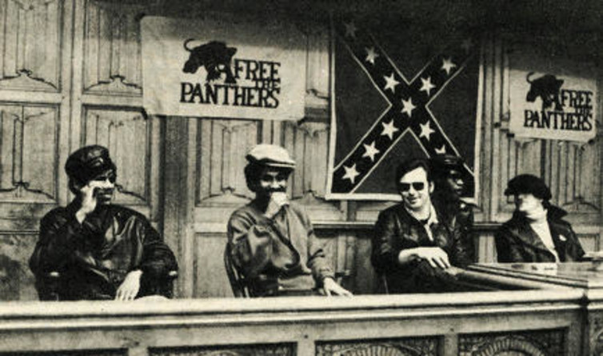

Perception

The mainstream press, fueled by COINTELPRO's information, constantly placed the BPP in the light of separatist, racist provacateurs determined to kill white people.
The mainstream press, fueled by COINTELPRO's information, constantly placed the BPP in the light of separatist, racist provacateurs determined to kill white people.
Truth


Though the BPP's campaign started as highly militant, their "pro black" mantra was never a call to arms against all white citizens. Eventually, their stance shifted from not just "pro black", but "power to the people" in the vein of class prosperity versus racial prosperity. The BPP had multiple enclaves of differing ethnicities championing their cause, to include The White Panthers (far-left white group), the Young Lords (Hispanic street gang in New York that changed their focus to community improvement) and the most unlikely of allies, the Young Patriots (white southern republican men who were experiencing class employment discrimination in Chicago). The core group of the Young Patriots even eventually let go of the Confederate flag as one of their uniting symbols after realizing they had much more in common with the Black Panthers than they did not have in common.
Though the BPP's campaign started as highly militant, their "pro black" mantra was never a call to arms against all white citizens. Eventually, their stance shifted from not just "pro black", but "power to the people" in the vein of class prosperity versus racial prosperity. The BPP had multiple enclaves of differing ethnicities championing their cause, to include The White Panthers (far-left white group), the Young Lords (Hispanic street gang in New York that changed their focus to community improvement) and the most unlikely of allies, the Young Patriots (white southern republican men who were experiencing class employment discrimination in Chicago). The core group of the Young Patriots even eventually let go of the Confederate flag as one of their uniting symbols after realizing they had much more in common with the Black Panthers than they did not have in common.